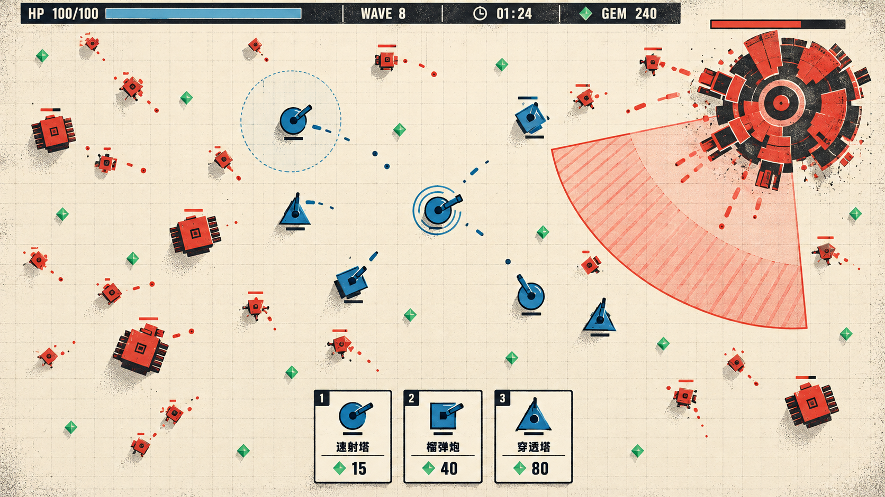
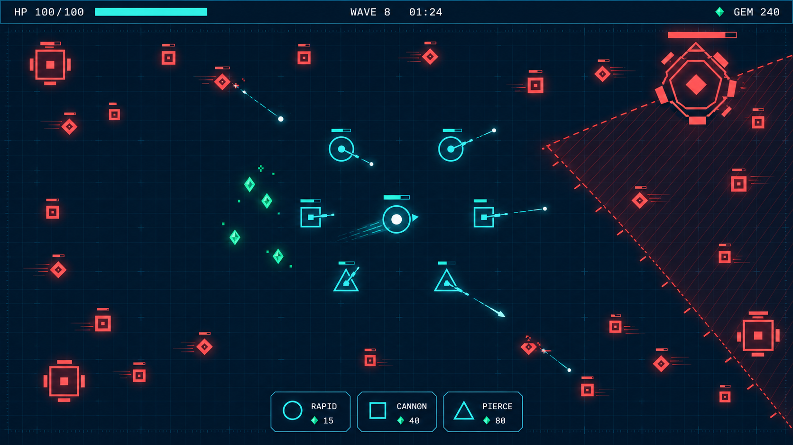
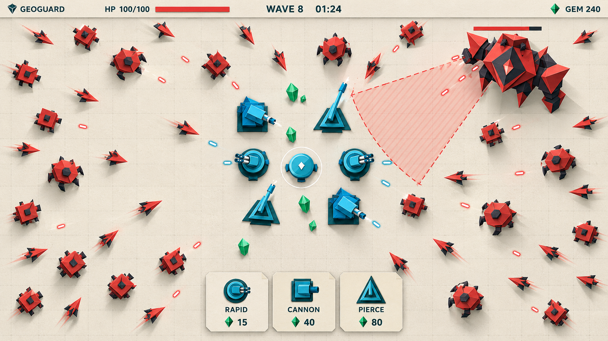
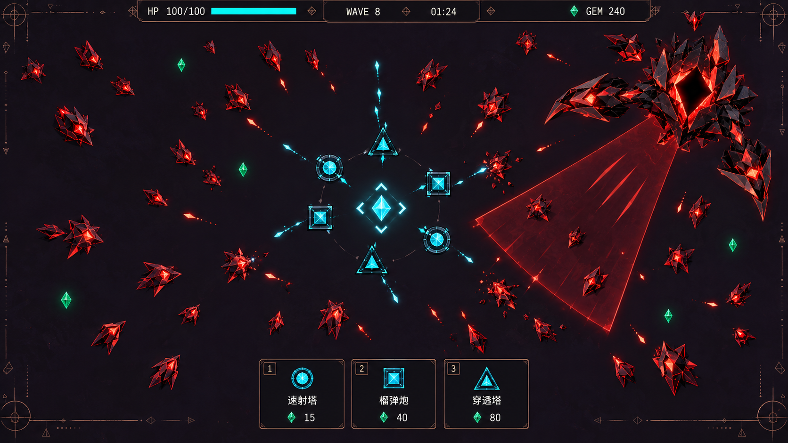

统一题目：自由移动的俯视生存塔防，玩家、塔群、敌潮、Boss 与危险预警。点击图片查看原图；切换单稿可放大检查。以下为生图概念稿，具体单位数量、文字和布局以实际输出为准。

用粗轮廓、有限色板与版画质感建立辨识度。重点检查红蓝单位是否分离、纸纹是否抢视线。

用深色底与克制发光突出行动和危险。重点检查高密度战斗中的亮线、弹道与预警是否混杂。

用折面和短阴影建立材质与亲和力。重点检查小尺寸折面是否消失、阴影是否干扰碰撞边界判断。

用晶体几何、蚀刻纹样与矿物色建立世界观。重点检查复杂纹样是否削弱敌友识别和危险提示。